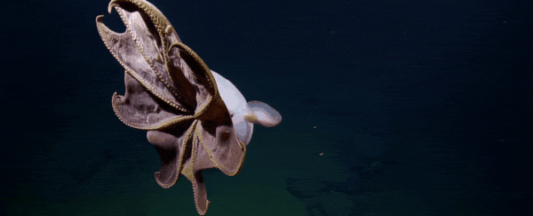

The Dumbo octopus also known as the flapjack octopus also referred to as the cutest octopus in the world! It is a deep sea octopus that is just the cutest squishiest little thing ever. There are currently 14 recognized species of dumbo octopus under Grimpoteuthis. They all have characteristics in common that make them related and adorable! Every dumbo octopus is an umbrella octopus is a type of octopus that has webbed skin between each of its eight tentacles and resemble an umbrella when the tentacles are spread. On top of that all dumbo octopuses have ear-like fins on top of their head that they use to propel themselves and steer through water currents. like all other octopodes they have eight tentacles and a soft flexible body. At the center of their tentacles they have a beak. On the back of their head they have a siphon to bring water into their body (they can also dispel water from the siphon too). Unlike most Octopus species, the dumbo octopus does not release any ink, this is because they have evolved to live in deep ocean where it is pitch black and ink would not be very useful. Most of the anatomy of the dumbo octopus is very similar to other octopodes. They have three hearts, no bones, blue blood, taste buds on each sucker and each tentacle has a brain listening to its main actual brain, also like the other octopuses the dumbo can change their color and texture. All of that sounds pretty alien but is actually very normal for octopodes.
Taxonomy
Domain: Eukarya
Kingdom: Animalia
Phylum: Mollusca
Class: Cephalopoda
Order: Octopoda
Family: Opisthoteuthidae
Genus: Grimpoteuthis
(14 known) Species:
Grimpoteuthis abyssicola
Grimpoteuthis bathynectes
Grimpoteuthis boylei
Grimpoteuthis challengeri
Grimpoteuthis discoveryi
Grimpoteuthis hippocrepium
Grimpoteuthis innominata
Grimpoteuthis meangensis
Grimpoteuthis megaptera
Grimpoteuthis pacifica
Grimpoteuthis plena
Grimpoteuthis tuftsi
Grimpoteuthis umbellata
Grimpoteuthis wuelkeri
Biology
The first stage in a dumbo octopuses life is when it hatches from its egg. The young larvae octopuses spend a period of time drifting in clouds of plankton, where they feed on copepods, larval crabs and larval starfish until they are ready to sink down to the bottom of the ocean, where the cycle repeats itself. Since dumbo octopuses do not come in contact with each other very often once sexually mature (which is around two years old) a male is always ready to pass his sperm off to a female, the female will hang onto the sperm until she is ready to lay the eggs. Most adults are ten inches long, but one has been recorded as being just over 5 feet long! The dumbo octopus tentacles are very strong. the back two are mostly used as legs to push themselves along where the front six can more closely be related to arms because they are used for grabbing food, moving objects and capturing prey. The dumbo octopus, like other octopodes has no skeleton or even an exoskeleton, the only hard part of its body is its beak, so it can technically fit through any hole wider than its beak. the suckers on its tentacles are used for touch, taste, and also for holding onto prey.
Ecology

One of the traits that makes the dumbo octopus extra special is its ecology! The dumbo octopus is the deepest known living octopus. Their extreme depths usually range around 13,000 feet beneath the surface. They sit on the bottom of the ocean floor in possibly one of the darkest coldest places on earth. that is where they feed on things just hovering above the ocean floor. Although this species of octopus is believed to be world wide it has only been documented in a few places and those places are around New Zealand, Australia, California, the Philippines and New Guinea.
Behavior
Dumbo octopus at sea floor rubbing eyes likely because of bright lights from undersea observer.
The behavior of the dumbo octopus is rarely observed because the creatures themselves are rare as well as the machines we use to go as deep as they live. however some of their behaviors are observed. The mostly live just above and on the ocean floor eating small things like worms and snails. Dumbo octopuses are predatory but still have defense mechanisms in case of a more aggressive bottom feeder. The dumbo octopus can change its color and texture to camouflage but rarely needs to because the deep ocean is so dark. They will propel themselves with their umbrella tentacles and steer and move faster with their ear-like tentacles. When being observed and sitting on the ocean floor they will rub their eyes with their tentacles likely because the light from the deep ocean observers are bright and their blackness adjusted eyes are not used to it.
Relationship to Humans
The relationship to humans would seem slim since we come in contact with them so rarely, however there are a few points to make mention of. People have often titled the dumbo octopus as the cutest octopus, this is likely because of its infant features that humans are drawn to and think cute: big eyes, soft curves, round shapes, big heads. those things are also associated with human babies so we likely see them as cute because they remind us of babies. Another thing that is notable would be that one of the characters in “Finding Nemo” was a dumbo octopus and commonly quoted for saying “Awww you guys made me ink!” which is somewhat inconsistent with the real dumbo octopus because they do not ink and also don't live in coral reefs like the movie depicted. Finally, the most important piece of information on the dumbo octopus is that is was named afterDumbo from the disney movie “Dumbo”. It was named after the baby elephant because of its unusual and adorable ear-like fins that make them look like dumbo the elephant a little bit.